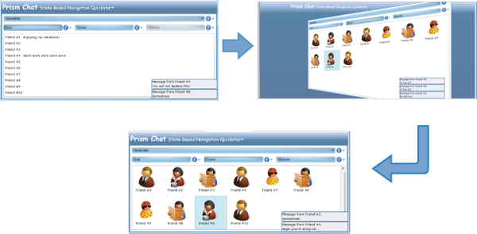
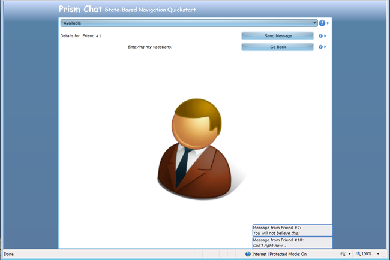
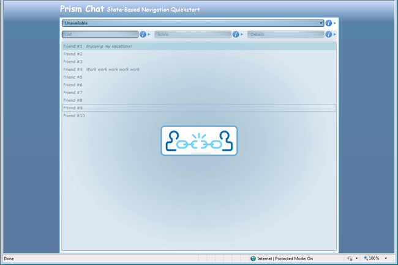
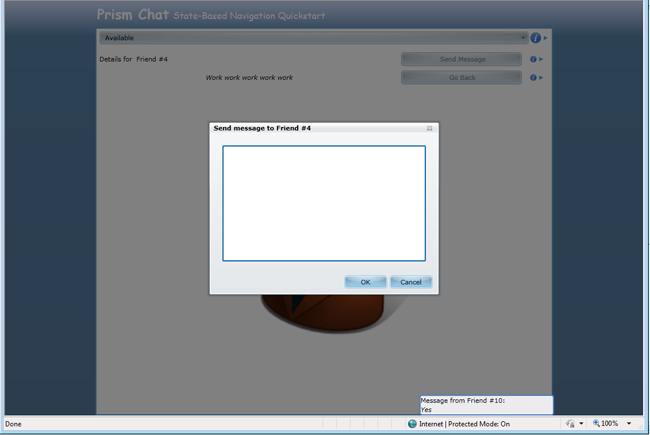
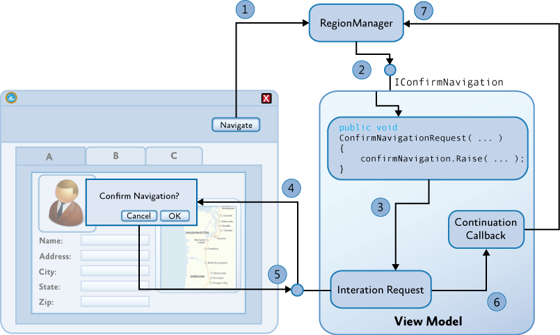
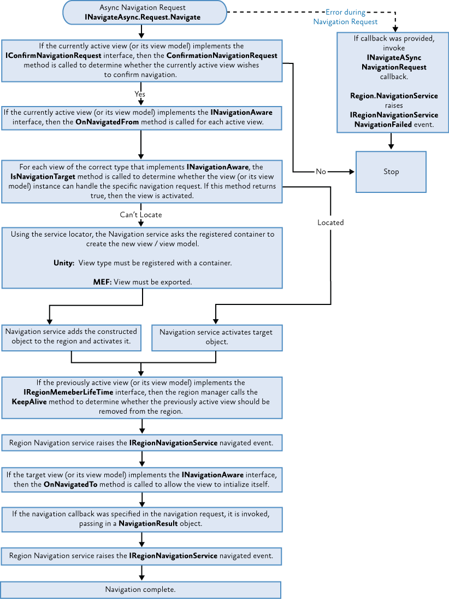

Navigation Using the Prism Library for WPF
As the user interacts with a rich client application, its user interface (UI) will be continuously updated to reflect the current task and data that the user is working on. The UI may undergo considerable changes over time as the user interacts with and completes various tasks within the application. The process by which the application coordinates these UI changes is often referred to as navigation. This topic describes how to implement navigation for composite Model-View-ViewModel (MVVM) applications using the Prism library.
Frequently, navigation means that certain controls in the UI are removed, while other controls are added. In other cases, navigation may mean that the visual state of one or more existing controls is updated—for example, some controls may be simply hidden or collapsed, while other controls are shown or expanded. Similarly, navigation may mean that the data being displayed by a control is updated to reflect the current state of the application—for example, in a master-detail scenario, the data displayed in the detail view will be updated based on the currently selected item in the master view. All of these scenarios can be considered navigation because the user interface is updated to reflect the user's current task and the application's current state.
Navigation within an application can result from the user's interaction with the UI (via mouse events or other UI gestures) or from the application itself as a result of internal logic-driven state changes. In some cases, navigation may involve very simple UI updates that require no custom application logic. In other cases, the application may implement complex logic to programmatically control navigation to ensure that certain business rules are enforced—for example, the application may not allow the user to navigate away from a certain form without first ensuring that the data entered is correct.
Implementing the required navigation behavior in a Windows Presentation Foundation (WPF) application can often be relatively straightforward because it provides direct support for navigation. However, navigation can be more complex to implement in applications that use the Model-View-ViewModel (MVVM) pattern or in composite applications that use multiple loosely-coupled modules. Prism provides guidance on implementing navigation in these situations.
Navigation in Prism
Navigation is defined as the process by which the application coordinates changes to its UI as a result of the user's interaction with the application or internal application state changes.
UI updates can be accomplished by adding or removing elements from the application's visual tree, or by applying state changes to existing elements within the visual tree. WPF is a very flexible platform, and it is often possible to implement a particular navigation scenario using this approach. However, the approach that will be most appropriate for your application depends on multiple factors.
Prism differentiates between the two styles of navigation described earlier. Navigation accomplished via state changes to existing controls in the visual tree is referred to as state-based navigation. Navigation accomplished via the addition or removal of elements from the visual tree is referred to as view-based navigation. Prism provides guidance on implementing both styles of navigation, focusing on the case where the application is using the Model-View-ViewModel (MVVM) pattern to separate the UI (encapsulated in the view) from the presentation logic and data (encapsulated in the view model).
State-Based Navigation
In state-based navigation, the view that represents the UI is updated either through state changes in the view model or through the user's interaction within the view itself. In this style of navigation, instead of replacing the view with another view, the view's state is changed. Depending on how the view's state is changed, the updated UI may feel to the user like navigation.
This style of navigation is suitable in the following situations:
- The view needs to display the same data or functionality in different styles or formats.
- The view needs to change its layout or style based on the underlying state of the view model.
- The view needs to initiate limited modal or non-modal interaction with the user within the context of the view.
This style of navigation is not suitable for situations in which the UI has to present different data to the user or when the user has to perform a different task. In these situations, it is better to implement separate views (and view models) to represent the data or task, and then to navigate between them using view-based navigation, as described later on in this topic. Similarly, this style of navigation is not suitable if the number of UI state changes required to implement the navigation are overly complex because the view's definition can become large and difficult to maintain. In this case, it is better to implement the navigation across separate views by using view-based navigation.
The following sections describe the typical situations in which state-based navigation can be used. Each of these sections refers to the State-Based Navigation QuickStart, which implements an instant messaging–style application that allows users to manage and chat with their contacts.
Displaying Data in Different Formats or Styles
Your application may often need to present the same data to the user, but in different formats or styles. In this case, you can use a state-based navigation within the view to switch between the different styles, potentially using an animated transition between them. For example, the State-Based Navigation QuickStart allows users to choose how their contacts are displayed—either as a simple text list or as avatars (icons). Users can switch between these visual representations by clicking the List button or the Avatars button. The view provides an animated transition between the two representations, as shown in the following illustration.

Contact view navigation in the State-Based Navigation QuickStart
Because the view is presenting the same data, but in a different visual representation, the view model is not required to be involved in the navigation between representations. In this case, navigation is entirely handled within the view itself. This approach provides the UI designer with a lot of flexibility to design a compelling user experience without requiring changes to the application's code.
Blend behaviors provide a good way to implement this style of navigation within a view. The State-Based Navigation QuickStart application uses Blend's DataStateBehavior data-bound to a radio button to switch between two visual states that are defined using the visual state manager, one button to show the contacts as a list and one button to show the contacts as icons.
<ei:DataStateBehavior Binding="{Binding IsChecked, ElementName=ShowAsListButton}"
Value="True"
TrueState="ShowAsList"
FalseState="ShowAsIcons"/>

As the user clicks the Contacts or Avatar radio buttons, the visual state is toggled between the ShowAsList visual state and the ShowAsIcons visual state. The flip transition animation between these states is also defined using the visual state manager.
Another example of this style of navigation is shown by the State-Based Navigation QuickStart application when the user switches to the details views for the currently selected contact. The following illustration shows an example of this.
The Contact Details view in the State-Based Navigation QuickStart
Again, this can be easily implemented using the Blend DataStateBehavior; however, this time it is bound to the ShowDetails property on the view model, which toggles between the ShowDetails and ShowContacts visual states using a flip transition animation.
Reflecting Application State
Similarly, the view within an application may sometimes need to change its layout or style based on changes to an internal application state, which in turn is represented by a property on a view model. An example of this scenario is shown in the State-Based Navigation QuickStart where the user's connection status is represented on the Chat view model class using a ConnectionStatus property. As the user's connection status changes, the view is informed (via a property change notification event) allowing the view to visually represent the current connection state appropriately, as shown in the following illustration.

Connection state representation in the State-Based Navigation QuickStart
To implement this, the view defines a DataStateBehavior data bound to the view model's ConnectionStatus property to toggle between the appropriate visual states.
<ei:DataStateBehavior Binding="{Binding ConnectionStatus}"
Value="Available"
TrueState="Available" FalseState="Unavailable"/>
Note that the connection state can be changed by the user via the UI or by the application according to some internal logic or event. For example, the application may move to an "unavailable" state if the user does not interact with the view within a certain time period or when the user's calendar indicates that he or she is in a meeting. The State-Based Navigation QuickStart simulates this scenario by switching the connection status randomly using a timer. When the connection status is changed, the property on the view model is updated, and the view is informed via a property changed event. The UI is then updated to reflect the current connection status.
All the preceding examples involve defining visual states in the view and switching between them as a result of the user's interaction with the view or via changes in properties defined by the view model. This approach allows the UI designer to implement navigation-like visual behavior in the view without requiring the view to be replaced or requiring any code changes to the application's code. This approach is suitable when the view is required to render the same data in different styles or layouts. It is not suitable for situations in which the user is to be presented with different data or application functionality or when navigating to a different part of the application.
Interacting With the User
Frequently, an application will need to interact with the user in a limited way. In these situations, it is often more appropriate to interact with the user within the context of the current view, instead of navigating to a new view. For example, in the State-Based Navigation QuickStart, the user is able to send a message to a contact by clicking the Send Message button. The view then displays a pop-up window that allows the user to type the message, as shown in the following illustration. Because this interaction with the user is limited and logically takes place within the context of the parent view, it can be easily implemented as state-based navigation.

Interacting with the user using a pop-up window in the State-Based Navigation QuickStart
Interacting with the user using a pop-up window in the State-Based Navigation QuickStart To implement this behavior, the State-Based Navigation QuickStart implements a SendMessage command, which is bound to the Send Message button. When this command is invoked, the view model interacts with the view to display the pop-up window. This is achieved using the Interaction Request pattern described in Implementing the MVVM Pattern.
The following code example shows how the view in the State-Based Navigation QuickStart application responds to the SendMessageRequest interaction request object provided by the view model. When the request event is received, the SendMessageChildWindow is displayed as a popup window.
<prism:InteractionRequestTrigger SourceObject="{Binding SendMessageRequest}">
<prism:PopupWindowAction IsModal="True">
<prism:PopupWindowAction.WindowContent>
<vs:SendMessagePopupView />
</prism:PopupWindowAction.WindowContent>
</prism:PopupWindowAction>
</prism:InteractionRequestTrigger>
View-Based Navigation
Although state-based navigation can be useful for the scenarios outlined earlier, navigation within an application will most often be accomplished by replacing one view within the application's UI with another. In Prism, this style of navigation is referred to as view-based navigation.
Depending on the requirements of the application, this process can be fairly complex and require careful coordination. The following are common challenges that often have to be addressed when implementing view-based navigation:
- The target of the navigation—the container or host control of the views to be added or removed—may handle navigation differently as views are added or removed from it, or they may visually represent navigation in different ways. In many cases, the navigation target will be a simple Frame or ContentControl, and navigated views will simply be displayed within these controls. However, there are many scenarios where the target for the navigation operation is a different type of container control, such as a TabControl or a ListBox control. In these cases, navigation may require the activation or selection of an existing view or the addition of new view is a specific way.
- The application will also often have to define how the view to be navigated to is identified. For example, in a web application, the page to be navigated to is often directly identified by a Uniform Resource Identifier (URI). In a client application, the view can be identified by type name, resource location, or in a variety of different ways. Furthermore, in a composite application, which is composed from loosely coupled modules, the views will often be defined in separate modules. Individual views will need to be identified in a way that does not introduce tight coupling and dependencies between modules.
- After the view is identified, the process by which the new view is instantiated and initialized has to be carefully coordinated. This can be particularly important when using the MVVM pattern. In this case, the view and view model may need to be instantiated and associated with each other via the view's data context during the navigation operation. In the case when the application is leveraging a dependency injection container, such as the Unity Application Block (Unity) or the Managed Extensibility Framework (MEF), the instantiation of the views and/or view models (and other dependent classes) may have to be achieved using a specific construction mechanism.
- The MVVM pattern provides a separation between the application's UI and its presentation and business logic. However, the navigational behavior of the application will often span UI and presentation logic parts of the application. The user will often initiate navigation from within the view, and the view will be updated as a result of that navigation, but navigation will often also need to be initiated or coordinated from within the view model. The ability to cleanly separate the navigational behavior of the application across the view and view model is an important aspect to consider.
- An application will also often need to pass parameters or context to the view so that it can be initialized properly. For example, if the user navigates to a view to update the details of a specific customer, the customer's ID or data will have to be passed to the view so that it can display the correct information.
- Many applications will also have to carefully coordinate navigation to ensure that certain business rules are obeyed. For example, users may be prompted before navigating away from a view so that they can correct any invalid data or be prompted to submit or discard any data changes that they have made within that view. This process requires careful coordination between the previous view and the new view.
- Lastly, most modern applications allow the user to easily navigate backward (or forward) to previously displayed views. Similarly, some applications implement their workflows using a sequence of views or forms and allow users to navigate forward or backward through them, adding or updating data as they go, before completing the task and submitting all their changes at one time. These scenarios require some kind of journaling (or history) mechanism so that the sequence of navigation can be stored, replayed, or pre-defined.
Prism provides support and guidance for these challenges by extending Prism's region mechanism to support navigation. The following sections provide a brief summary of Prism regions and describe how they have been extended to support view-based navigation.
Prism Region Overview
Prism regions are designed to support the development of composite applications (that is, applications that consist of multiple modules) by allowing the application's overall UI to be constructed in a loosely-coupled way. Regions allow views defined in a module to be displayed within the application's UI without requiring the module to have explicit knowledge of the application's overall UI structure. They allow the layout of the application's UI to be changed easily, thereby allowing the UI designer to choose the most appropriate UI design and layout for the application without requiring changes in the modules themselves.
Prism regions are essentially named placeholders within which views can be displayed. Any control in the application's UI can be a declared a region by simply adding a RegionName attached property to it, as shown here.
<ContentControl prism:RegionManager.RegionName="MainRegion" ... />
For each control specified as a region, Prism creates a Region object to represent the region and a RegionAdapter object, which manages the placement and activation of views into the specified control. The Prism Library provides RegionAdapter implementations for most of the common WPF controls. You can create a custom RegionAdapter to support additional controls or when you need to define a custom behavior. The RegionManager class provides access to the Region objects within the application.
In many cases, the region control will be a simple control, such as a ContentControl, that can display one view at a time. In other cases, the Region control will be a control that is able to display multiple views at the same time, such as a TabControl or a ListBox control.
The region adapter manages a list of views within the associated region. One or more of these views will be displayed in the region control according to its defined layout strategy. Views can be assigned a name that can be used to retrieve that view later on. The region adapter manages the active state of the views within the region. The active view is the view that is the selected or top-most view—for example, in a TabControl, the active view is the one displayed in the selected tab; in a ContentControl, the active view is the view that is currently displayed as the control's content.
Note: The active state of a view is important to consider during navigation. Frequently, you will want the active view to participate in navigation so that it can save data before the user navigates away from it, or so that it can confirm or cancel the navigation operation.
Previous versions of Prism allowed views to be displayed in a region in two ways. The first, called view injection, allows views to be programmatically displayed in a region. This approach is useful for dynamic content, where the view to be displayed in the region changes frequently, according to the application's presentation logic.
View injection is supported through the Add method on the Region class. The follow code example shows how you can obtain a reference to a Region object via the RegionManager class and programmatically add a view to it. In this example, the view is created using a dependency injection container.
IRegionManager regionManager = ...;
IRegion mainRegion = regionManager.Regions["MainRegion"];
InboxView view = this.container.Resolve<InboxView>();
mainRegion.Add(view);
The second method, called view discovery, allows a module to register a view type against a region name. Whenever a region with the specified name is displayed, an instance of the specified view will be automatically created and displayed in the region. This approach is useful for relatively static content, where the view to be displayed in a region does not change.
View discovery is supported through the RegisterViewWithRegion method on the RegionManager class. This method allows you to specify a callback method that will be called when the named region is shown. The following code example shows how you can create a view (via the dependency injection container) when the main region is first shown.
IRegionManager regionManager = ...;
regionManager.RegisterViewWithRegion("MainRegion", () =>
container.Resolve<InboxView>());
For a detailed overview of Prisms region support and information about how to leverage regions to compose the application's UI using view injection and discovery, see Composing the User Interface. The rest of this topic describes how regions have been extended to support view-based navigation, and how this addresses the various challenges described earlier.
Basic Region Navigation
Both view injection and view discovery can be considered to be limited forms of navigation–view injection is a form of explicit, programmatic navigation, and view discovery is a form of implicit or deferred navigation. However, in Prism 4.0, regions have been extended to support a more general notion of navigation, based on URIs and an extensible navigation mechanism.
Navigation within a region means that a new view is to be displayed within that region. The view to be displayed is identified via a URI, which, by default, refers to the name of the view to be created. You can programmatically initiate navigation using the RequestNavigate method defined by the INavigateAsync interface.
Note: Despite its name, the INavigateAsync interface does not represent asynchronous navigation that's carried out on a separate background thread. Instead, the INavigateAsync interface represents the ability to perform pseudo-asynchronous navigation. The RequestNavigate method may return synchronously following the completion of navigation operation, or it may return while a navigation operation is still pending, as in the case where the user needs to confirm the navigation. By allowing you to specify callbacks and continuations during navigation, Prism provides a mechanism to enable these scenarios without requiring the complexity of navigating on a background thread.
The INavigateAsync interface is implemented by the Region class, allowing you to initiate navigation within that region.
IRegion mainRegion = ...;
mainRegion.RequestNavigate(new Uri("InboxView", UriKind.Relative));
You can also call the RequestNavigate method on the RegionManager, which allows you to specify the name of the region to be navigated. This convenient method obtains a reference to the specified region and then calls the RequestNavigate method, as shown in the preceding code example.
IRegionManager regionManager = ...;
regionManager.RequestNavigate("MainRegion",
new Uri("InboxView", UriKind.Relative));
By default, the navigation URI specifies the name of a view that is registered in the container.
Using MEF, you can simply export the view type with the specified name.
[Export("InboxView")]
public partial class InboxView : UserControl { ... }
During navigation, the specified view is instantiated, via the container or MEF, along with its corresponding view model and other dependent services and components. After the view is instantiated, it is then added to the specified region and activated (activation is described in more detail later in this topic).
Note: The preceding description illustrates view-first navigation, where the URI refers to the name of the view type, as it is exported or registered with the container. With view-first navigation, the dependent view model is created as a dependency of the view. An alternative approach is to use view model–first navigation, where the navigation URI refers to the name of the view model type, as it is exported or registered with the container. View model–first navigation is useful when the view is defined as a data template, or when you want your navigation scheme to be defined independently of the views.
The RequestNavigate method also allows you to specify a callback method, or a delegate, which will be called when navigation is complete.
private void SelectedEmployeeChanged(object sender, EventArgs e)
{
...
regionManager.RequestNavigate(RegionNames.TabRegion,
"EmployeeDetails", NavigationCompleted);
}
private void NavigationCompleted(NavigationResult result)
{
...
}
The NavigationResult class defines properties that provide information about the navigation operation. The Result property indicates whether or not navigation succeeded. If navigation was successful, then the Result property will be true. If navigation failed, normally because of returning 'continuationCallBack(false)' in the IConfirmNavigationResult.ConfirmNavigationRequest method, then the Result property will be false. If navigation failed due to an exception, the Result property will be false and the Error property provides a reference to any exception that was thrown during navigation. The Context property provides access to the navigation URI and any parameters it contains, and a reference to the navigation service that coordinated the navigation operation.
View and View Model Participation in Navigation
Frequently, the views and view models in your application will want to participate in navigation. The INavigationAware interface enables this. You can implement this interface on the view or (more commonly) the view model. By implementing this interface, your view or view model can opt-in to participate in the navigation process.
Note: In the description that follows, although a reference is made to calls to this interface during navigation between views, it should be noted that the INavigationAware interface will be called during navigation whether it is implemented by the view or by the view model. During navigation, Prism checks to see whether the view implements the INavigationAware interface; if it does, it calls the required methods during navigation. Prism also checks to see whether the object set as the view's DataContext implements this interface; if it does, it calls the required methods during navigation.
This interface allows the view or view model to participate in a navigation operation. The INavigationAware interface defines three methods.
public interface INavigationAware
{
bool IsNavigationTarget(NavigationContext navigationContext);
void OnNavigatedTo(NavigationContext navigationContext);
void OnNavigatedFrom(NavigationContext navigationContext);
}
The IsNavigationTarget method allows an existing (displayed) view or view model to indicate whether it is able to handle the navigation request. This is useful in cases where you can re-use an existing view to handle the navigation operation or when navigating to a view that already exists. For example, a view displaying customer information can be updated to display a different customer's information. For more information about using this method, see the section, Navigating to Existing Views, later in this topic.
The OnNavigatedFrom and OnNavigatedTo methods are called during a navigation operation. If the currently active view in the region implements this interface (or its view model), its OnNavigatedFrom method is called before navigation takes place. The OnNavigatedFrom method allows the previous view to save any state or to prepare for its deactivation or removal from the UI, for example, to save any changes that the user has made to a web service or database.
If the newly created view implements this interface (or its view model), its OnNavigatedTo method is called after navigation is complete. The OnNavigatedTo method allows the newly displayed view to initialize itself, potentially using any parameters passed to it on the navigation URI. For more information, see the next section, Passing Parameters During Navigation.
After the new view is instantiated, initialized, and added to the target region, it then becomes the active view, and the previous view is deactivated. Sometimes you will want the deactivated view to be removed from the region. Prism provides the IRegionMemberLifetime interface, which allows you to control the lifetime of views within regions by allowing you to specify whether deactivated views are to be removed from the region or simply marked as deactivated.
public class EmployeeDetailsViewModel : IRegionMemberLifetime
{
public bool KeepAlive
{
get { return true; }
}
}
The IRegionMemberLifetime interface defines a single read-only property, KeepAlive. If this property returns false, the view is removed from the region when it is deactivated. Because the region no longer has a reference to the view, it then becomes eligible for garbage collection (unless some other component in your application maintains a reference to it). You can implement this interface on your view or your view model classes. Although the IRegionMemberLifetime interface is primarily intended to allow you to manage the lifetime of views within regions during activation and deactivation, the KeepAlive property is also considered during navigation after the new view is activated in the target region.
Note: Regions that can display multiple views, such as those that use an ItemsControl or a TabControl, will display both non-active and active views. Removal of a non-active view from these types of regions will result in the view being removed from the UI.
Passing Parameters During Navigation
To implement the required navigational behavior in your application, you will often need to specify additional data during navigation request than just the target view name. The NavigationContext object provides access to the navigation URI, and to any parameters that were specified within it or externally. You can access the NavigationContext from within the IsNavigationTarget, OnNavigatedFrom, and OnNavigatedTo methods.
Prism provides the NavigationParameters class to help specify and retrieve navigation parameters. The NavigationParameters class maintains a list of name-value pairs, one for each parameter. You can use this class to pass parameters as part of navigation URI or for passing object parameters.
The following code example shows how to add individual string parameters to the NavigationParameters instance so that it can be appended to the navigation URI.
Employee employee = Employees.CurrentItem as Employee;
if (employee != null)
{
var navigationParameters = new NavigationParameters();
navigationParameters.Add("ID", employee.Id);
_regionManager.RequestNavigate(RegionNames.TabRegion,
new Uri("EmployeeDetailsView" + navigationParameters.ToString(), UriKind.Relative));
}
Additionally, you can pass object parameters by adding them to the NavigationParameters instance, and passing it as a parameter of the RequestNavigate method. This is shown in the following code.
Employee employee = Employees.CurrentItem as Employee;
if (employee != null)
{
var parameters = new NavigationParameters();
parameters.Add("ID", employee.Id);
parameters.Add("myObjectParameter", new ObjectParameter());
regionManager.RequestNavigate(RegionNames.TabRegion,
new Uri("EmployeeDetailsView", UriKind.Relative), parameters);
}
You can retrieve the navigation parameters using the Parameters property on the NavigationContext object. This property returns an instance of the NavigationParameters class, which provides an indexer property to allow easy access to individual parameters, independently of them being passed through the query or through the RequestNavigate method.
public void OnNavigatedTo(NavigationContext navigationContext)
{
string id = navigationContext.Parameters["ID"];
ObjectParameter myParameter = navigationContext.Parameters["myObjectParameter"];
}
Navigating to Existing Views
Frequently, it is more appropriate for the views in your application to be re-used, updated, or activated during navigation, instead of replaced by a new view. This is often the case where you are navigating to the same type of view but need to display different information or state to the user, or when the appropriate view is already available in the UI but needs to be activated (that is, selected or made top-most).
For an example of the first scenario, imagine that your application allows the user to edit customer records, using the EditCustomer view, and the user is currently using that view to edit customer ID 123. If the customer decides to edit the customer record for customer ID 456, the user can simply navigate to the EditCustomer view and enter the new customer ID. The EditCustomer view can then retrieve the data for the new customer and update its UI accordingly.
An example of the second scenario is where the application allows the user to edit more than one customer record at a time. In this case, the application displays multiple EditCustomer view instances in a tab control—for example, one for customer ID 123 and another for customer ID 456. When the user navigates to the EditCustomer view and enters customer ID 456, the corresponding view will be activated (that is, its corresponding tab will be selected). If the user navigates to the EditCustomer view and enters customer ID 789, a new instance will be created and displayed in the tab control.
The ability to navigate to an existing view is useful for a variety of reasons. It is often more efficient to update an existing view instead of replace it with a new instance of the same type. Similarly, activating an existing view, instead of creating a duplicate view, provides a more consistent user experience. In addition, the ability to handle these situations seamlessly without requiring much custom code means that the application is easier to develop and maintain.
Prism supports the two scenarios described earlier via the IsNavigationTarget method on the INavigationAware interface. This method is called during navigation on all views in a region that are of the same type as the target view. In the preceding examples, the target type of the view is the EditCustomer view, so the IsNavigationTarget method will be called on all existing EditCustomer view instances currently in the region. Prism determines the target type from the view URI, which it assumes is the short type name of the target type.
Note: For Prism to determine the type of the target view, the view's name in the navigation URI should be the same as the actual target type's short type name. For example, if your view is implemented by the MyApp.Views.EmployeeDetailsView class, the view name specified in the navigation URI should be EmployeeDetailsView. This is the default behavior provided by Prism. You can customize this behavior by implementing a custom content loader class; you can do this by implementing the IRegionNavigationContentLoader interface or by deriving from the RegionNavigationContentLoader class.
The implementation of the IsNavigationTarget method can use the NavigationContext parameter to determine whether it can handle the navigation request. The NavigationContext object provides access to the navigation URI and the navigation parameters. In the preceding examples, the implementation of this method in the EditCustomer view model compares the current customer ID to the ID specified in the navigation request, and it returns true if they match.
public bool IsNavigationTarget(NavigationContext navigationContext)
{
string id = navigationContext.Parameters["ID"];
return _currentCustomer.Id.Equals(id);
}
If the IsNavigationTarget method always returns true, regardless of the navigation parameters, that view instance will always be re-used. This allows you to ensure that only one view of a particular type will be displayed in a particular region.
Confirming or Cancelling Navigation
You will often find that you will need to interact with the user during a navigation operation, so that the user can confirm or cancel it. In many applications, for example, the user may try to navigate while in the middle of entering or editing data. In these situations, you may want to ask the user whether he or she wants to save or discard the data that has been entered before continuing to navigate away from the page, or whether the user wants to cancel the navigation operation altogether. Prism supports these scenarios via the IConfirmNavigationRequest interface.
The IConfirmNavigationRequest interface derives from the INavigationAware interface and adds the ConfirmNavigationRequest method. By implementing this interface on your view or view model class, you allow them to participate in the navigation sequence in a way that allows them to interact with the user so that the user can confirm or cancel the navigation. You will often use an Interaction Request object, as described in in Advanced MVVM Scenarios, to display a confirmation pop-up window.
Note: The ConfirmNavigationRequest method is called on the active view or view model, similar to the OnNavigatedFrom method described earlier.
The ConfirmNavigationRequest method provides two parameters, a reference to the current navigation context as described earlier, and a callback method that you can call when you want navigation to continue. For this reason, the callback is known as a continuation callback. You can store a reference to the continuation callback so the application can call it after it finishes interacting with the user. If your application interacts with the user through an Interaction Request object, you can chain the call to the continuation callback to the callback from the interaction request. The following diagram illustrates the overall process.

The following steps summarize the process of confirming navigation using an InteractionRequest object:
- Navigation operation is initiated via a RequestNavigate call.
- If the view or view model implements IConfirmNavigation, call ConfirmNavigationRequest.
- The view model raises the interaction request event.
- The view displays the confirmation pop-up window and awaits the user's response.
- The interaction request callback is invoked when the user closes the pop-up window.
- Continuation callback is invoked to continue or cancel the pending navigation operation.
- The navigation operation is completed or canceled.
To illustrate this, look at the View-Switching Navigation Quick Start. This application provides the ability for the user to compose a new email using the ComposeEmailView and ComposeEmailViewModel classes. The view model class implements the IConfirmNavigation interface. If the user navigates, such as by clicking the Calendar button, when they are composing an email, the ConfirmNavigationRequest method will be called so that the view model can confirm the navigation with the user. To support this, the view model class defines an interaction request, as shown in the following code example.
public class ComposeEmailViewModel : NotificationObject, IConfirmNavigationRequest
{
. . .
private readonly InteractionRequest<Confirmation> confirmExitInteractionRequest;
public ComposeEmailViewModel(IEmailService emailService)
{
. . .
this.confirmExitInteractionRequest = new InteractionRequest<Confirmation>();
}
public IInteractionRequest ConfirmExitInteractionRequest
{
get { return this.confirmExitInteractionRequest; }
}
}
In the ComposeEmailView class, an interaction request trigger is defined, and data is bound to the ConfirmExitInteractionRequest property on the view model. When the interaction request is made, a simple pop-up window will be displayed to the user.
<UserControl.Resources>
<DataTemplate x:Key="ConfirmExitDialogTemplate">
<TextBlock HorizontalAlignment="Center" VerticalAlignment="Center"
Text="{Binding}"/>
</DataTemplate>
</UserControl.Resources>
<Grid x:Name="LayoutRoot" Background="White">
<ei:Interaction.Triggers>
<prism:InteractionRequestTrigger SourceObject="{Binding
ConfirmExitInteractionRequest}">
<prism:PopupWindowAction IsModal="True" CenterOverAssociatedObject="True"/>
</prism:InteractionRequestTrigger>
</ei:Interaction.Triggers>
...
The ConfirmNavigationRequest method on the ComposeEmailVewModel class is called if the user attempts to navigate while an email is being composed. The implementation of this method invokes the interaction request defined earlier so that the user can confirm or cancel the navigation operation.
void IConfirmNavigationRequest.ConfirmNavigationRequest(
NavigationContext navigationContext, Action<bool> continuationCallback)
{
. . .
this.confirmExitInteractionRequest.Raise(
new Confirmation {Content = "...", Title = "..."},
c => {continuationCallback(c.Confirmed);});
}
The callback for the interaction request is called when the user clicks the buttons in the confirmation pop-up window to confirm or cancel the operation. This callback simply calls the continuation callback, passing in the value of the Confirmed flag, and causing the navigation to continue or be canceled.
Note: It should be noted that after the interaction request event is raised, the ConfirmNavigationRequest method immediately returns so that the user can continue to interact with the UI of the application. When the user clicks the OK or Cancel buttons on the pop-up window, the callback method of the interaction request is made, which in turn calls the continuation callback to complete the navigation operation. All the methods are called on the UI thread. Using this technique, no background threads are required.
Using this mechanism, you can control if the navigation request is carried out immediately or is deferred, pending an interaction with the user or some other asynchronous interaction (for example, as a result of a web service request). To enable navigation to proceed, you can simply call the continuation callback method, passing true to indicate that it can continue. Similarly, you can pass false to indicate that the navigation should be canceled.
void IConfirmNavigationRequest.ConfirmNavigationRequest(
NavigationContext navigationContext, Action<bool> continuationCallback)
{
continuationCallback(true);
}
If you want to defer navigation, you can store a reference to the continuation callback you can then call when the interaction with the user (or web service) completes. The navigation operation will be pending until you call the continuation callback.
If the user initiates another navigation operation in the meantime, the navigation request then becomes canceled. In this case, calling the continuation callback has no effect because the navigation operation to which it relates is no longer current. Similarly, if you decide not to call the continuation callback, the navigation operation will be pending until it is replaced with a new navigation operation.
Using the Navigation Journal
The NavigationContext class provides access to the region navigation service, which is responsible for coordinating the sequence of operations during navigation within a region. It provides access to the region in which navigation is taking place, and to the navigation journal associated with that region. The region navigation service implements the IRegionNavigationService, which is defined as follows.
public interface IRegionNavigationService : INavigateAsync
{
IRegion Region {get; set;}
IRegionNavigationJournal Journal {get;}
event EventHandler<RegionNavigationEventArgs> Navigating;
event EventHandler<RegionNavigationEventArgs> Navigated;
event EventHandler<RegionNavigationFailedEventArgs> NavigationFailed;
}
Because the region navigation service implements the INavigateAsync interface, you can initiate navigation within the parent region by calling its RequestNavigate method. The Navigating event is raised when a navigation operation is initiated. The Navigated event is raised when navigation within a region is completed. The NavigationFailed is raised if an error was encountered during navigation.
The Journal property provides access to the navigation journal associated with the region. The navigation journal implements the IRegionNavigationJournal interface, which is defined as follows.
public interface IRegionNavigationJournal
{
bool CanGoBack { get; }
bool CanGoForward { get; }
IRegionNavigationJournalEntry CurrentEntry { get; }
INavigateAsync NavigationTarget { get; set; }
void Clear();
void GoBack();
void GoForward();
void RecordNavigation(IRegionNavigationJournalEntry entry);
}
You can obtain and store a reference to the region navigation service within a view during navigation via the OnNavigatedTo method call. By default, Prism provides a simple stack-based journal that allows you to navigate forward or backward within a region.
You can use the navigation journal to allow the user to navigate from within the view itself. In the following example, the view model implements a GoBack command, which uses the navigation journal within the host region. Therefore, the view can display a Back button that allows the user to easily navigate back to the previous view within the region. Similarly, you can implement a GoForward command to implement a wizard style workflow.
public class EmployeeDetailsViewModel : INavigationAware
{
...
private IRegionNavigationService navigationService;
public void OnNavigatedTo(NavigationContext navigationContext)
{
navigationService = navigationContext.NavigationService;
}
public DelegateCommand<object> GoBackCommand { get; private set; }
private void GoBack(object commandArg)
{
if (navigationService.Journal.CanGoBack)
{
navigationService.Journal.GoBack();
}
}
private bool CanGoBack(object commandArg)
{
return navigationService.Journal.CanGoBack;
}
}
You can implement a custom journal for a region if you need to implement a specific workflow pattern within that region.
Note: The navigation journal can only be used for region-based navigation operations that are coordinated by the region navigation service. If you use view discovery or view injection to implement navigation within a region, the navigation journal will not be updated during navigation and cannot be used to navigate forward or backward within that region.
Opting out of the Navigation Journal
When using the Navigation Journal, it can be useful to display intermediary pages like splash screens, loading pages or dialogs. It is desirable that these pages should not revisited via calls to IRegionNavigationJournal.GoForward() or IRegionNavigationJournal.GoBack(). This behaviour can be achieved by implementing the IJournalAware interface.
public interface IJournalAware
{
bool PersistInHistory();
}
Pages can opt-out of being added to the journal history by implementing IJournalAware on the View or View Model and returning false from PersistInHistory().
public class IntermediaryPage : IJournalAware
{
public bool PersistInHistory() => false;
}
Using the WPF Navigation Framework
Prism region navigation was designed to address a wide range of common scenarios and challenges that you may face when implementing navigation in a loosely-coupled, modular application that uses the MVVM pattern and a dependency injection container, such as Unity, or the Managed Extensibility Framework (MEF). It also was designed to support navigation confirmation and cancellation, navigation to existing views, navigation parameters and navigation journaling.
By supporting navigation within Prism regions, it also supports navigation within a wide range of layout controls and supports the ability to change the layout of the application's UI without affecting its navigation structure. It also supports pseudo-synchronous navigation, which allows for rich user interaction during navigation.
However, the Prism region navigation was not designed to replace WPF's navigation framework. Instead, Prism region navigation was designed to be used side-by-side with the WPF navigation framework.
The WPF navigation framework is difficult to use to support the MVVM pattern and dependency injection. It is also based on a Frame control that provides similar functionality in terms of journaling and navigation UI. You can use the WPF navigation framework alongside Prism region navigation, though it may be easier and more flexible to implement navigation using only Prism regions.
The Region Navigation Sequence
The following illustration provides an overview of the sequence of operations during a navigation operation. It is provided for reference so that you can see how the various elements of the Prism region navigation work together during a navigation request.

More Information
For more information about Prism regions, see Composing the User Interface.
For more information about the MVVM pattern and Interaction Request pattern, see Implementing the MVVM Pattern and Advanced MVVM Scenarios.
For more information about the Interaction Request object, Using Interaction Request Objects in Advanced MVVM Scenarios.
For more information about the Visual State Manager, see VisualStateManager Class on MSDN.
For more information about using Microsoft Blend behaviors, see Working with built-in behaviors on MSDN.
For more information about creating custom behaviors with Microsoft Blend, see Creating Custom Behaviors on MSDN.